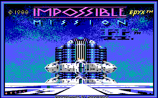
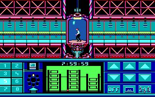
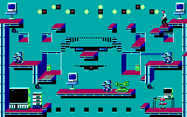

名稱：虎膽妙算／虎膽妙算2 (Impossible Mission 2，英文版) 簡介：Novotrade 1988年出品的動作遊戲，由Epyx代理發行，台灣由智冠代理進口 [待補]。    備註：本版為1989/4/1版（已破解） 保護：磁片 備註：1989/4/1版磁片有兩種，部份檔案略異，尚不知何者為正確。 檔案：im2_pce.rar = 1988智冠版（PCem整合版，未破解）


